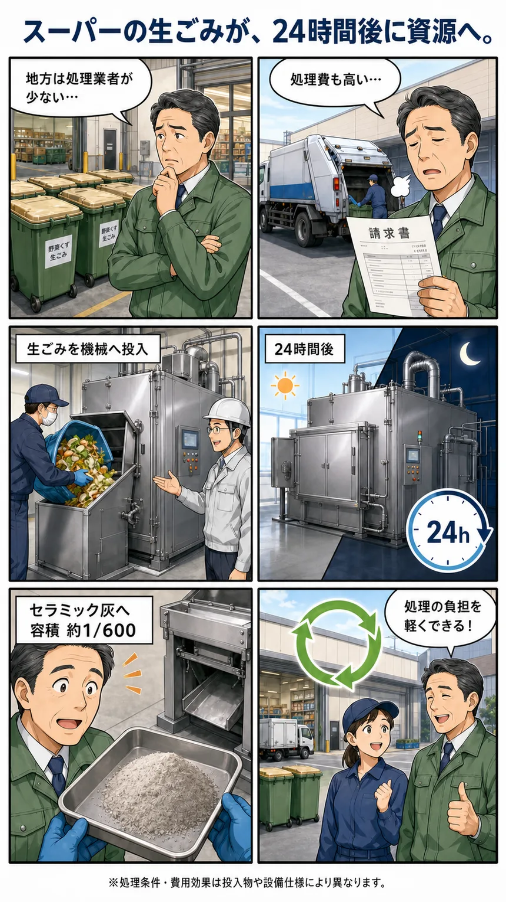

補助燃料ゼロ。予備乾燥ゼロ。含水率60〜70%の脱水汚泥ケーキも、そのまま投入できる熱分解装置です。焼却炉ではありません。導入した食品工場では、廃棄物処理コストが月400万円から月10万円になりました。
全4問・約60秒。判定結果はその場で表示されます。
こんな状況なら、検討する価値があります
ERCMは、外部委託している廃棄物の"かさ"そのものを工場内で消します。
30秒でわかる導入イメージ

ERCMとは
Earth – Resource – Ceramic – Machine。国内特許 第4580388号／米国特許 USP No. 7,648,615 B2 取得済。
食品残渣も廃プラも混ざったまま投入可能。含水率が高いものも予備乾燥は不要です。液体・粉体のみ袋詰めが必要。
空気比1.0未満（メーカー資料では0.2〜0.3程度）の低酸素状態で、有機物の分子構造を切断。反応熱が次の熱源になるため、補助燃料は要りません。
投入した生ごみ等は、翌日には無機質のセラミック粉末（物質収支5%以下）に。粉末はメーカーが全量買取するため、最終処分がゼロになります。
約100℃前後
ERCM熱源領域を除く。稼働中も外壁を手で触れます。
ほぼ大気圧
意図的な加圧・減圧機構はありません。
ほぼ投入のみ
夜間無人運転が可能。メンテ習得は2週間〜1か月。
8,500〜9,000 cal/g
重油〜ガソリン相当の熱量。燃焼油として再利用可。
投入可能物
対象は C（炭素）・H（水素）・O（酸素）で構成される有機物。動植物系バイオマスと、化石燃料由来のプラスチックです。スーパーマーケットでの導入例では、店舗から出る生ごみ等を投入し、約24時間後にはセラミック灰になっています。
比較
出典：メーカー技術資料（2025年7月版）。焼却施設側の一般的特徴は 寺嶋均（2008)「廃棄物処理プラントの維持管理技術と現状と課題」環境技術会誌 No.131 による。
| 従来の焼却施設等 | ERCM（熱分解施設） | |
|---|---|---|
| 減容率 | 1/10〜1/20 程度 | 1/100〜1/1300 程度（実測：実証炉1/128、名古屋10型1/1300） |
| 補助燃料 | 燃料・薬剤・用水を多量に消費 | 運転時の燃料・薬剤は不要。消費電力も極めて少ない |
| 高含水物 | そのままでは焼却できず予備乾燥が必要 | 含水率60〜70%の脱水ケーキも直接投入可 |
| 分別 | 形状・性状の不均一がトラブル要因 | 不均一・混在物もそのまま投入可能な設計 |
| 構造 | 多数の稼働機器からなる複雑・大規模プラント | 耐火材不要のシンプル構造。稼働機器は電子発生装置・ブロア・ダンパー・ポンプ・電気触媒 |
| 運転員 | 熟練運転員の育成に数年 | 技術者でなくても対応可。メンテ習得に2週間〜1か月 |
| メンテナンス | 毎年定期的な補修工事が必要 | 定期実施するが簡易的。大がかりな補修工事にならない |
| CO₂排出量 | 21% | 1.7%（有機物を揮発性低分子量有機物に分解制御するため） |
| 残渣の行き先 | 焼却灰の最終処分が必要 | セラミック粉末は100%リサイクル可能（メーカーが全量買取） |
廃プラが多いなら
OHD（Hydro – Oxygen – Destroyer）は、ERCMの熱分解に油化回収を組み合わせた有機物減容再生装置です。
重量比 80%
廃プラスチック・ビニール等の石油由来製品を油化。回収した原油は汎用利用できます。
ERCMの 1/3 以下
電子発生ユニットを1.5倍に増強し、装置を大幅にコンパクト化。
トラックで移動可
設備ごと移動できるため、現場・災害地域での処理にも対応します。
燃焼せず無害化
触媒排気処理装置を採用。排ガスを水中に直接吹き込み、急速冷却で油化成分を液化分離（水は循環利用）。
機種ラインナップ（ERCM／OHD 共通型式） 記載のない型式（0.5型・2型等）も、100型を最大規模として製造対応が可能です。
| 型式 | 1型 | 5型 | 10型 | 20型 | 50型 | 100型 |
|---|---|---|---|---|---|---|
| 処理能力 ㎥/日 | 1.0 | 5.0 | 10.0 | 20.0 | 50.0 | 100.0 |
| 処理能力 トン/日 | 0.2〜0.3 | 1.0〜1.5 | 2.0〜3.0 | 4.0〜6.0 | 10〜15 | 20〜30 |
| 寸法 幅×長×高 m | 2.3×7.6×3.1 | 4.5×17.8×4.4 | 6.0×22.5×4.5 | 8.0×27.0×6.6 | 10.0×23.0×6.0 | 17.0×40.0×6.0 |
| 設置面積 ㎡（ERCM/OHD） | 45.9／30.6 | 135.2／90.1 | 204.0／136.0 | 300.0／200.0 | 312.0 | 817.0 |
| 重量 kg | 15,700 | 23,900 | 25,200 | 41,100 | 76,813 | 229,020 |
| 消費電力 kWh/日 ※ | 20.0 | 30.0 | 35.0 | 40.0 | 45.0 | 60.0 |
| 電源 | 200V（三相）／装置構成：熱分解施設（本体）＋排気処理装置（滞留槽・ウェットスクラバー・凝縮水タンク・還元槽）＋制御盤 | |||||
※ 消費電力はバッチ処理の投入口・ポンプ・制御器のみ。イオン発生ユニットは0.4W/個で、200個設置の場合でも約2.0kWh/日程度。20㎥/日処理の場合の電気代は10〜15万円/月程度です。
実測データと導入実績
排ガスは計量証明事業者による測定値、減容率は3か月の連続実証による実測値です。
| 排ガス測定項目 | 単位 | 測定値 | 基準値 | 基準比 |
|---|---|---|---|---|
| 窒素酸化物 | ppm | 45〜63 | 250 | 約 1/4〜1/5 |
| 塩化水素 | mg/N㎥ | 32 | 700 | 約 1/22 |
| 煤塵（ダスト） | mg/N㎥ | 4.4 | 150 | 約 1/34 |
| ダイオキシン類 | ng-TEQ/㎥ | 2.6 | 5 | 約 1/2 |
鹿嶋市衛生センター（茨城県鹿嶋市）設置 15㎥/日 商用プラント。平成24年5月測定／計量証明：株式会社日本シーシーエル／酸素濃度12%換算値。投入物は鹿嶋市の一般ごみ（圧縮しにくい布団・衣類・ソフト塩ビ等、生ごみは無し）。
「焼却困難物」の分解試験実績 焼却炉が苦手とするものほど、差が出ます。
2024年4月23日、国土強靱化推進本部（本部長：内閣総理大臣）より表彰状を授与。循環経済新聞（2024年3月11日）、月刊「廃棄物」（2024年3月号）にも掲載されました。
福島県広野町での実証で、がれきは容量が268分の1に減少。2013年11月27日のNHK「ニュースおはよう日本」でも、放射性物質を含む焼却灰が出ない処理設備として紹介されました。
環境・社会工学院 高橋史武准教授らと反応メカニズムの解明を推進。実験とシミュレーションによる理論的説明を進めており、国際誌「Applied Energy」に2報が掲載されています。
ERCM 適合診断
所要約60秒。判定結果・推奨機種サイズ・注意点がその場で表示されます。
処理したい廃棄物を選んでください
複数選択できます。混在したまま投入する前提で構いません。
1日あたりの発生量はどのくらいですか
おおよそで構いません。体積（㎥）でわからない場合は、感覚に近いものを選んでください。
水分の多さはどのくらいですか
ERCMは高含水物が得意です。乾いている必要はありません。
現在はどのように処理していますか
現状の方法によって、比較すべきコスト項目が変わります。
処理量・投入物に応じた機種構成、設置スペース、概算費用、現状の委託費との比較をご案内します。しつこい営業はいたしません。
よくある確認事項
設置の可否は所管自治体との協議事項です。事前に押さえておくべき点をそのまま載せます。
メーカーはERCMを「内熱型の熱分解施設」と位置づけています。焼却施設は完全燃焼のため空気比1.3〜1.6程度の空気を常時供給しますが、熱分解施設は空気比1.0未満の還元状態で有機物を分解し、炭化物・可燃性の液体やガスを回収します。ERCMは空気比0.2〜0.3程度で稼働し、火炎燃焼は生じないとされています。
メーカー資料では、廃棄物処理法施行規則 第一条の七の二（熱分解設備の構造）および平成17年 環境省告示第1号（環境大臣が定める熱分解の方法）の各要件について、すべて適合と説明されています。
ただし、施設としての取り扱い・必要な許認可の最終判断は、設置場所の所管自治体との協議によります。検討初期の段階から自治体協議を並行して進めることをお勧めしており、その進め方も含めてご支援します。
メーカー説明では、火炎燃焼が生じないためばいじん（飛ばい）が発生せず、ダイオキシン類の生成源も抑制されるとされています。加えて熱分解室内の上下で温度が急激に変化するため、ダイオキシン類が生成しにくい環境になるとされています。NOx・SOxについても、貧酸素の還元雰囲気と急激な温度変化により生成反応が抑制されやすいと説明されています。
実測値としては、鹿嶋市衛生センターでの測定で、ダイオキシン類 2.6 ng-TEQ/㎥（基準5）、煤塵 4.4 mg/N㎥（基準150）が確認されています。排気中のHClは水洗浄で、排水中のHClは中和沈殿で除去します。
セラミック粉末（物質収支で5%以下）は、株式会社ASK商会が全量買取します。当面は新設ERCMの敷き粉として再利用され、将来的にはコンクリートへの混合材、水質浄化材等への再利用が計画されています。
油溶性成分（物質収支40〜70%）は、分析上は有害成分を含まず、燃焼熱量8,500〜9,000cal/g（重油〜ガソリン相当）が確認されています。燃焼油としてのサーマルリサイクルのほか、分溜精製によるケミカルリサイクルの可能性もあります。水溶性成分（20〜40%）は、木質主体の投入物からは木酢液が得られます。処理水は次亜塩素酸水で酸化分解し、簡易的な排水処理で排水基準内となり下水道へ排出できます。
分解試験の実績があります。橋梁の剥離塗装屑（PCB 15mg/kg含有）をERCMで処理した結果、処理後は検出限界の0.0005mg/kg未満まで減少し、炉外への排出も検出されませんでした。この結果をもとに、PCB含有旧塗膜を低コストで処理する鋼構造物の保全工法として特許出願されています（特開2018-159172）。
処理対象には、塩素化合物・ダイオキシン・DDT・フッ素化合物（PTFE・PFOA・PFOS）等の難分解性有機化合物も含まれます。ただし、これらは案件ごとの性状が大きく異なるため、実投入前の個別試験と、所管自治体との事前協議を必須としてご案内しています。
金属・ガラス・がれき等の不燃物は対象外です。ペットボトル大程度までであれば固形残渣中から回収できますが、目立つ大きさの不燃物は投入前に除去してください。除去することでERCM本来の性能が発揮されます。
また、液体や粉体はそのままでは投入できません。袋に詰める等の対応が必要です。
御社の廃棄物が処理できるか、60秒で判定できます
適合診断を受ける